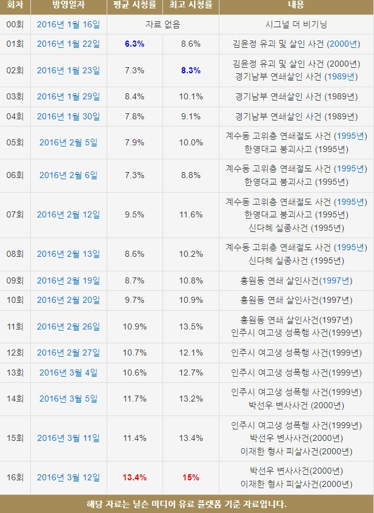

시청률
시청층이 한정된 수사물 소재의 드라마임에도 불구하고 tvn 드라마 흥행세와 함께 김혜수, 조진웅, 이제훈 등 주연 배우의 명연기 덕분에 첫 화부터 시청률이 상당히 높게 나왔다. 또한 동시간대 경쟁작의 10배가 넘는 시청률 차이를 만들어내고 있다.
2월 12일 7회 방송에서 최고 시청률 11.6%를 기록하며 미생(드라마)의 최고 시청률 10.3%를 뛰어넘는 시청률을 보여줬다.
2월 26일 11회 방송에서 응답하라 1994의 기록을 넘어서는 시청률 기록을 세웠다.
마지막 방송에서 평균 시청률 13.4%, 최고 시청률 15%를 기록하며 자체 최고 시청률로 유종의 미를 거뒀다. 최고 시청률의 평균은 약 11.14%, 평균 시청률의 평균은 9.39%로 나왔다.